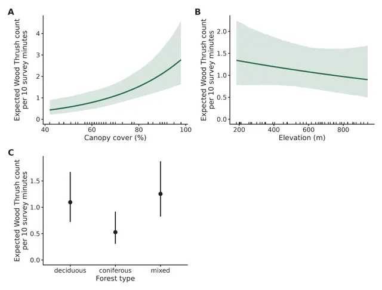

Regression and causal inference
Wood Thrush point counts: negative-binomial GLMM with survey-effort offset and station random intercepts (simulated example)
Per 10 percentage points of canopy cover (%) this is associated with a 39% higher expected Wood Thrush count (rate ratio 1.39, 95% CI 1.18 to 1.64).